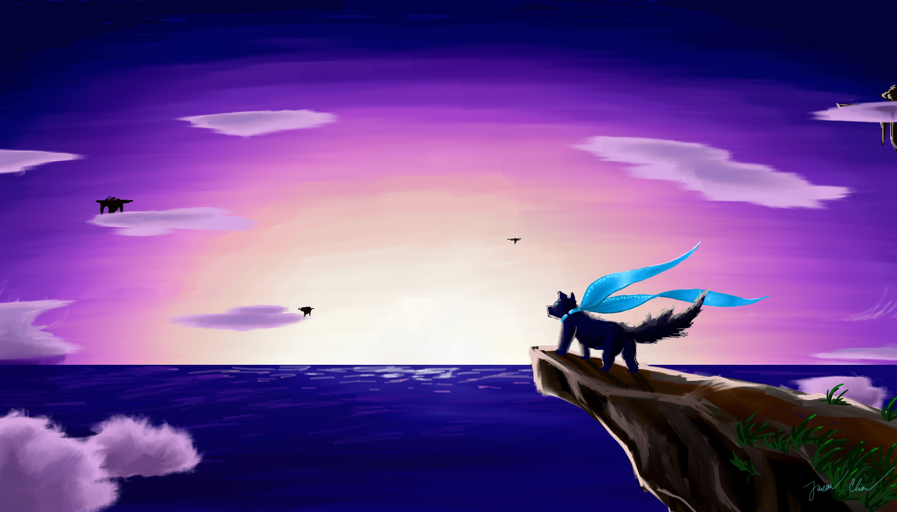

Featured
This is a sample of what I think is my best work! See the other sections for more!
NOTE: Instagram seems to not have permalinks, so a few of these pictures are broken links. I'll try to fix this soon
The main banner image in glorious 4K">